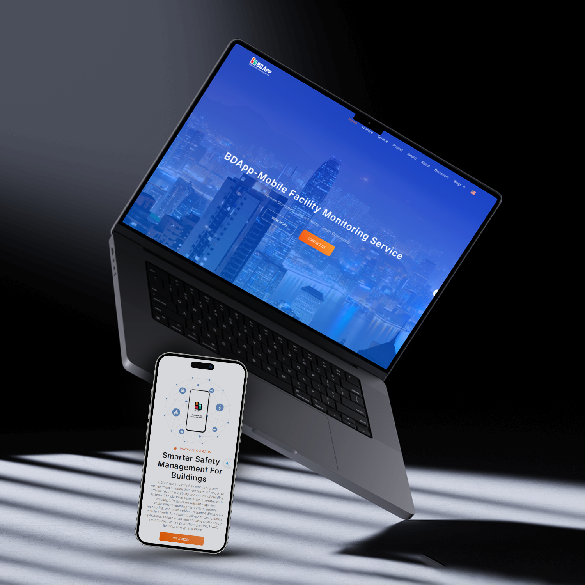
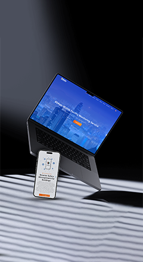

01. Overview & Context
BDApp is a B2B facility monitoring platform. Prior to the redesign, the legacy web application suffered from severe navigation confusion and high onboarding drop-off rates (reaching up to 45%) caused by excessive cognitive load and an overcrowded interface.
02. Brand Foundations & Physical Touchpoints
Extended the core visual identity from digital products into physical brand assets and bespoke iconography for high-contrast visibility.
Bespoke Icon System
Pixel-perfect 24px custom icons for facility monitoring metrics.

Guidelines & Packaging
Consistent branding extended to hardware packaging and merch.
03. Scalable Design System
Built a comprehensive UI Kit in Figma using Auto Layout 5.0, Variables (Tokens), and dynamic components to accelerate development handoff by 40%.
04. Interactive Motion & UX Flow
Crafted micro-interactions and seamless navigation transitions to guide users through complex data monitoring without feeling overwhelmed.
05. Impact & Metrics
🚀 Key Outcomes Post-Launch:
• +35% increase in new user registration completion rate.
• -20% reduction in average time-to-task completion.
• -40% reduction in design-to-development handoff overhead.